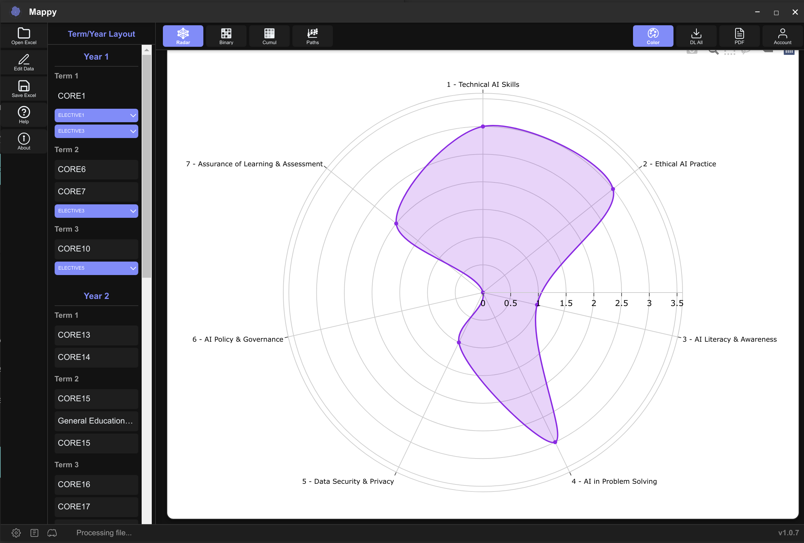

Mappy Intelligence
Curriculum Competency Visualisation Tool
Interactive charts and visualisations for competency coverage analysis


Curriculum Competency Visualisation Tool
Interactive charts and visualisations for competency coverage analysis
Making learning intentional, purposeful, and engaging for continuous growth
All visualisations in Mappy are interactive, allowing you to hover for details, filter by competency areas, and identify patterns across your curriculum. Easily track how competencies develop throughout a program sequence.
Stay on track with standards - See exactly how your courses align with the standards that matter to your institution. No more guesswork about whether you're hitting the mark!
Create a logical learning journey - Build connections between grade levels so students experience a smooth progression, while keeping content consistent across parallel courses.
Spot the missing pieces - Easily identify gaps in your curriculum and remove redundant content that wastes valuable teaching time, making your curriculum more efficient and effective.
Boost student success - Connect your teaching methods directly to learning goals so students are better prepared and achieve more. It's like giving students a clearer path to success!
Break down classroom walls - Create opportunities for teachers to share ideas, resources, and strategies across subjects and grades, building a more unified learning experience.
Show your work with pride - Make it easy for everyone (parents, administrators, and accreditors) to see what you're teaching and why, building confidence in your curriculum.
Make assessments that really count - Create tests and projects that truly measure what matters, giving you meaningful insights into student progress and mastery.
Put resources where they matter most - Spend your budget, time, and energy on the right materials, technology, and training based on actual curriculum needs.
Ace your accreditation - Breeze through accreditation reviews with clear evidence that your curriculum meets all requirements, saving time and reducing stress.
Stay fresh and relevant - Keep your curriculum up-to-date with changing standards, trends, and student needs through regular, data-driven reviews that make adaptation easier.
Connect the learning dots - Find natural bridges between subjects, helping students apply skills like critical thinking and writing across different classes for a more connected learning experience.
See the big picture - Get a bird's-eye view of how skills and knowledge build across years, making it easier to plan ahead and prepare students for future success.
Get everyone on the same page - Make it easier for teachers, administrators, and stakeholders to talk about curriculum goals and progress with a shared visual language.
Help students see their path forward - Show students how today's learning connects to tomorrow's goals, boosting their motivation and investment in their education journey.
Supercharge your teaching team - Pinpoint exactly where teachers could benefit from additional training, focusing professional development where it will have the biggest impact.
Mappy offers flexible visualisation options to suit your specific curriculum analysis needs. Filter by competency categories, adjust colour schemes, weight analysis by assessment items, and generate focused reports for different audiences and purposes.
Prioritise curriculum analysis based on assessment importance, distinguishing between formative exercises and high-stakes evaluations.
Personalise colour schemes for different reporting needs, making your curriculum visualisations both accessible and meaningful.
Save visualisations as images or export raw data for further analysis in your preferred applications.
Model various student pathways through your curriculum by toggling elective courses. Instantly see how different course selections impact competency coverage, helping you design balanced program options and advise students on optimal course selections.
Model different course selection pathways to ensure all students meet programme goals regardless of which electives they choose.
Identify potential competency gaps created by specific elective combinations and proactively address them in your curriculum design.
Analyze your curriculum through multiple lenses including Competencies, AI Impact, Sustainable Development Goals (SDG), and Wellbeing and Belonging. Get a comprehensive view of how your courses address these critical dimensions.
Track traditional competencies and skills across your curriculum to ensure comprehensive coverage of learning objectives.
Understand how your curriculum prepares students for AI-transformed professions and builds AI literacy.
Map how your courses contribute to the UN Sustainable Development Goals, preparing students to address global challenges.
Ensure your curriculum supports student wellbeing and creates an inclusive learning environment where all students feel they belong.
Map your curriculum against established educational taxonomies including CDIO, Miller's Pyramid, SOLO, Dreyfus Model, PMBOK Guide, and Krathwohl's Affective Domain. Ensure progression from basic knowledge to advanced mastery across your program.
Track progression from surface to deep learning using the Structure of Observed Learning Outcomes framework.
Ensure engineering programs develop complete skills from Conceiving and Designing to Implementing and Operating.
Map skill development from novice to expert levels across your curriculum progression.
Address emotional and value-based learning from basic reception to complex internalization.
Join our waiting list to get early access to Mappy Intelligence and transform your curriculum analysis.
Join Waiting List